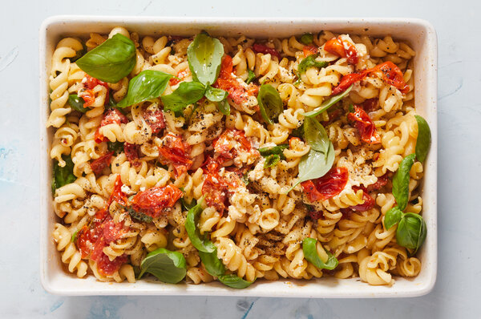

One pot pasta
With tomatoes and hummus sauce

Description
This super quick dish can be done in a few minutes and only require few ingridients. It's one of my favourite, since I'm not a good cook and I want to get things done as fast as possible
This is a modified vegan version of the tiktok's favourite feta/cherry tomatoe pasta. Insted of feta the hummus is used. This change makes it a great callorie packed food with great taste, 0 cholesterol and almost no preparation time
Ingridients
- Cherry tomatoes (300 g)
- One hummus, either home made or prepared (around 150 g)
- Pasta of your choice
- Olive oil
- Fresh basil
- Pepper
- Salt
Steps
- Preheat your oven on 250 degrees Celsius
- Get a glass dish and drop in washed cherry tomatoes
- Add salt, pepper and olive oil and mix well to get the tomatoes covered
- Pour the hummus into the middle of glass dish and let it bake in the oven for 20-30 minutes
- Meanwhile prepare your pasta accoring to the package istructions
- Once the tomatoes finished baking, put them out and mush them togehther with a fork
- Pour your pasta into the glass dish and mix it together
- Finish with frash basil and serve in bowls!